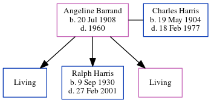

Angeline Marie Harris (née Barrand) 1908 - 1960
[ Home ] | [ Calendar ] | [ Surnames Index ] | [ Census Index ] | [ Family History ]Angeline Barrand, the wife of Charles F Harris (the fourth cousin twice-removed on the mother's side of Nigel Horne), was born in Fort Wayne, Allen, Indiana, USA on Jul 20, 19081 and married Charles (with whom she had 3 children: Jack R, Ralph Eugene and Arlene J, along with 2 surviving children) in Allen, Indiana, USA on Apr 26, 19261.
During her life, she was living at her birthplace on Apr 1, 19302 and on Apr 1, 19403.
She died in 1960 and was buried at Prairie Grove Cemetery, Fort Wayne, Indiana after 1960.
Children
- Ralph Eugene was born on Sep 9, 1930
Citations
- United States Marriages - Findmypast
- US Census 1930 - Findmypast (was age 21 and the wife of the head of the household)
- US Census 1940 - Findmypast (was age 31 and the wife of the head of the household)
Media
Charles Harris - Angeline Barrand - gravestone

US Census 1930 - USC/1930/004950561/00764/002
United States Marriages - FS/MAR/31794932/2
United States Marriages - R_1072354555/2
Family Tree
Generated by ged2site. Last updated on Jun 11, 2024